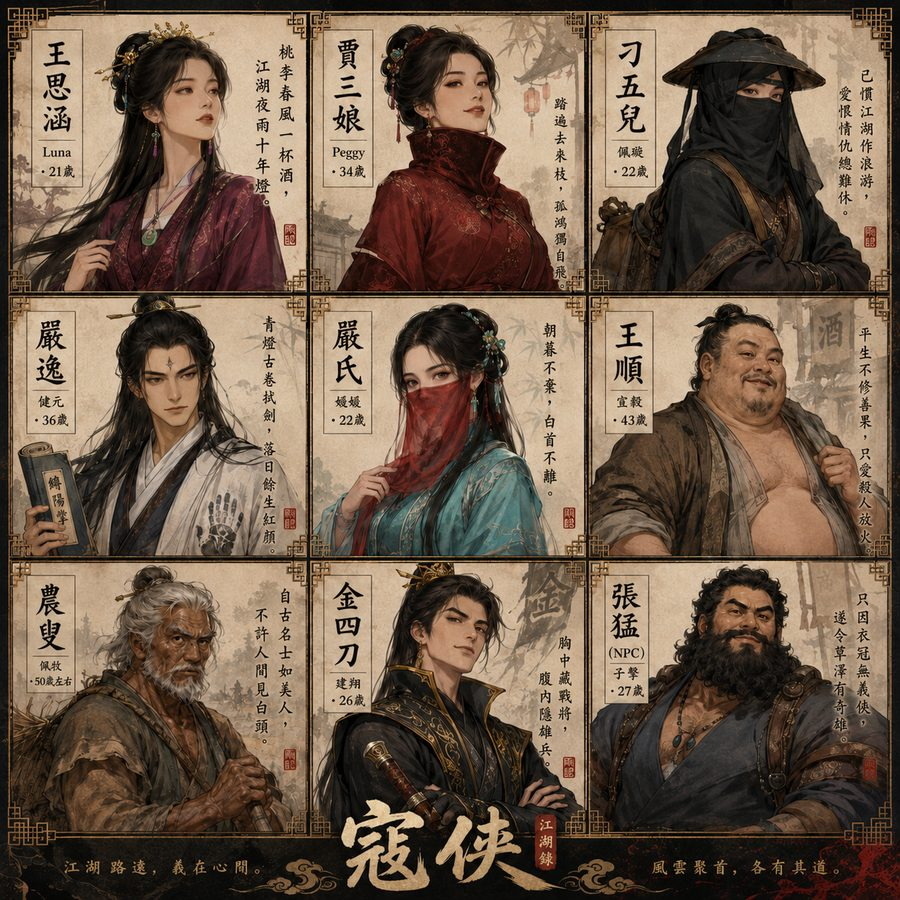
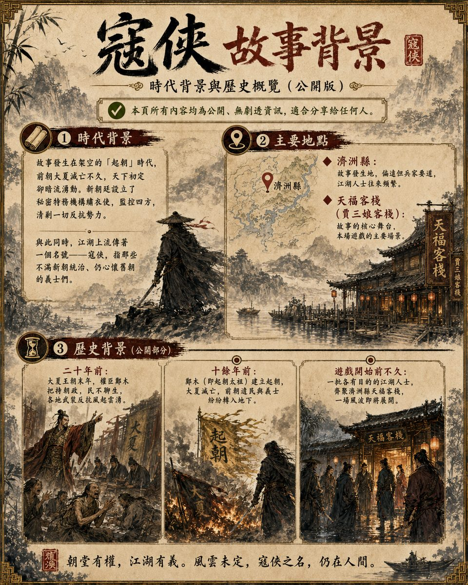
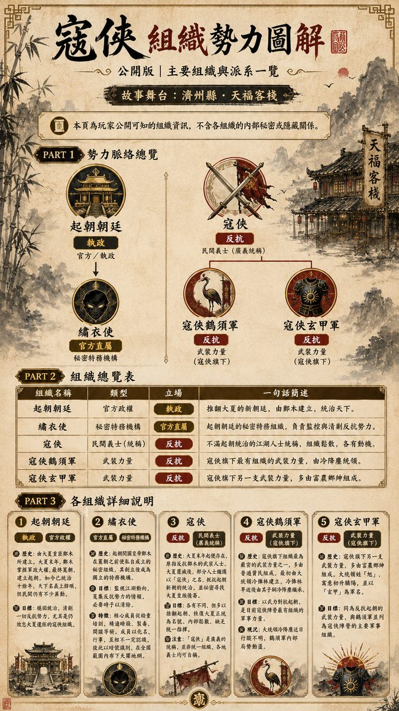

🎭 玩家入口
寇俠 — 玩家資訊區
登場角色

世界觀 · 江湖組織

世界觀背景

江湖組織
情境一
遊戲開始後可查閱
📋
玩家指引
開場說明、遊戲規則、流程概覽、注意事項。
🎭
角色資訊（玩家版）
各角色的公開身份、戰鬥數值及陣營說明。不含 GM 真相。
📜
角色劇本
各角色劇本整理稿。請只閱讀自己所扮演的角色，勿閱讀他人劇本。
📰
江湖軼聞
關於大夏、起朝、寇俠、繡衣使的背景線索（共 9 張），全員傳閱。
🔖
個人線索拍賣
共 9 張個人線索，起拍價 10 兩銀票。得標後點擊查閱，不需公開。
📝
答題卡
情境一、情境二各 3 題。選擇角色後填寫答案，自動儲存於本機。
情境二
GM 宣告後開放
等待 GM 說明後再開啟